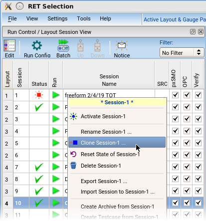

After the first
session has been created, you can create variations on the setup
to run a series of experiments.
If you want to clone a completed session to create a testcase,
see “Exporting a Session”.
Restrictions and Limitations
Video
The “Demonstration: Job Run Setup” video in the “Getting Started
with Parametric Explorer” video series demonstrates the job run
setup for Parametric Explorer jobs.
Procedure
- In the Run Control
/ Layout Session View pane, right-click the session
you want to use as the basis of a new session and click Clone
Session-x.

You can only make one clone
at a time. The RET Selection window communicates with the database
to retrieve settings before updating the window.
- To clear
the results table when cloning, click the Reset Session
State checkbox. To clear the results table at a later
time, right-click the session in the Run Control / Layout
Session View pane and select Reset State
of Session.
- Supply
a name for the new session in the dialog box.
- For each session, customize
the settings for the experiments you plan. Refer to “Define a Session” for detailed instructions.
Note: When a cloned session is modified, the stages
affected by the modifications are flagged with a red dot in the
Setup Items tree. To clear the flag, right-click the affected stage
and select Clear stagename Setup
modified flag.
- Once the sessions are ready,
start them from the Run Control tab.
To
launch a single session, click the green triangle next to the session
name.
To launch multiple
sessions, click Batch and select jobs from
the Run column. Click the button with three green triangles at the bottom.
The Run Configuration dialog box appears.
- Modify
the Run Configuration settings, if needed.
Dispatcher Mode: Off —
Executes the session using the RET Selection GUI’s process space.
This is not recommended as
it usually causes the RET Selection window to become very slow.
Remote File Mode —
Executes on the named remote hosts. Execution for the Free-Form
pxSMO and Parametric Explorer session modes is handled differently.
For maximum
efficiency when using Free-Form pxSMO, each session should have
a number of CPUs equal to (number of gauges) x maximum (number of
PWs in pxSMO, number of focus base points if a CDOF job is used).
For a CDOF job, the default number of PWs is 9. For an EL job, the default
number of PWs is 11. Using set_on_target and suppress_extra_printing adds
PWs. The default number of focus base points is 11. Each CPU receives
a particular clip at a particular process window condition.
For Free-Form pxSMO only, the dialog box displays a recommended minimum
of CPUs.
When using
the Parametric Explorer, each remote performs one source exploration
and each CPU on the remote runs one clip for that source. The source
explorations are sent to individual remotes until the specified
remotes are busy. The remaining explorations are queued and processed
as the earlier explorations are completed.
Run Script Mode —
If you have a run script such as for LSF or Univa grids, you can
supply it on the Run Script field. The dispatcher will use this
to distribute work to the grid.
The Run Script and Options settings can be specified by manually
entering the settings into their respective fields. The icon next
to each field opens an interface for faster selection of these settings
and automatically fills each field.
When using the Parametric Explorer, the runscript gets called
for each source exploration. In the runscript, it is recommended
to specify the number of CPUs (numcpus) to equal to the number of
gauges.
No Remote File, No Run Script Mode —
Even if you have only a single computer available, this mode is
still recommended over not using the dispatcher as it allows you
to continue to interact with the RET Selection window. The optimization
is run in a different process.
Max Parallel Session Runs — Appears
when using Parametric Explorer and limits the number of remotes
used concurrently.
Keep All —
Keeps OPC and OPCverify for each source exploration. The default
is off to minimize disk space usage and keeps files for only the
highest cDOF solution.
After you set up and dismiss the Run Configuration dialog box,
the RET Selection window will temporarily be non-responsive as it
queues the job.
If you started more sessions than Max Parallel Session Jobs,
some jobs are queued. You can adjust their order in the queue using
the icons in the status column. (The number next to the icon indicates
its current position in the queue.)
- Once the
sessions are submitted, ensure job notification is on in order to
receive notifications by email when certain events are reached.
This only needs to be set up once. The dialog box can be accessed
through the Notice button in the Run Control window.
Results
The Run Control pane activates the
first queued session and updates the progress indicators at the
bottom of the pane. In the Job Status tab
to the right of the setup pane you can see which step is being executed
by a blue circling arrow. In addition, the log window displays the
transcript.
When queued sessions have finished,
the optimized sources are displayed as thumbnails in the Run
Control, Layout Session View, and
Session Browser Result tabs.